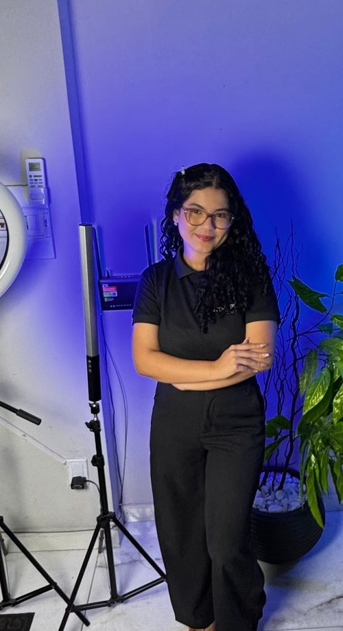
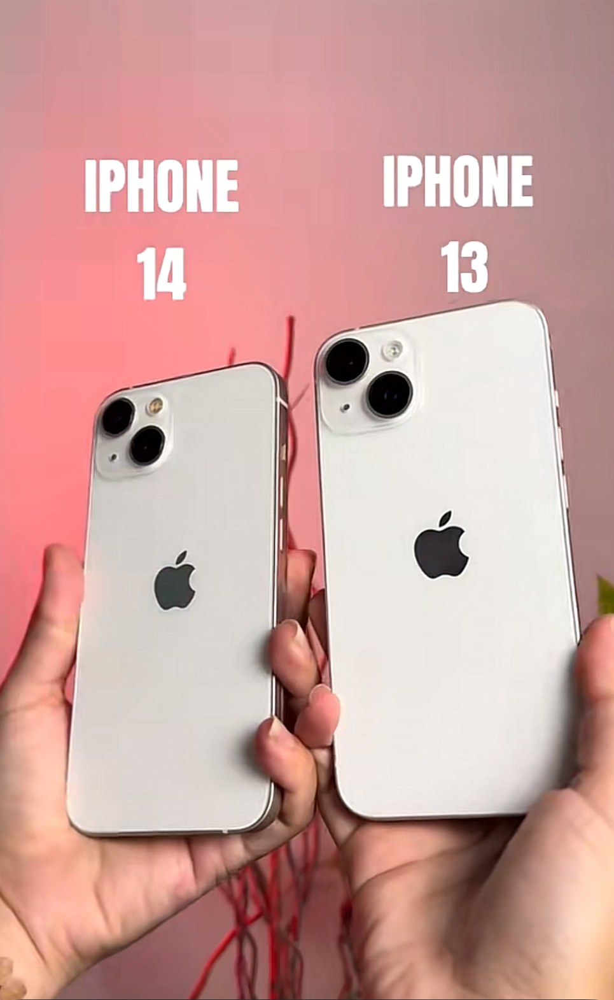
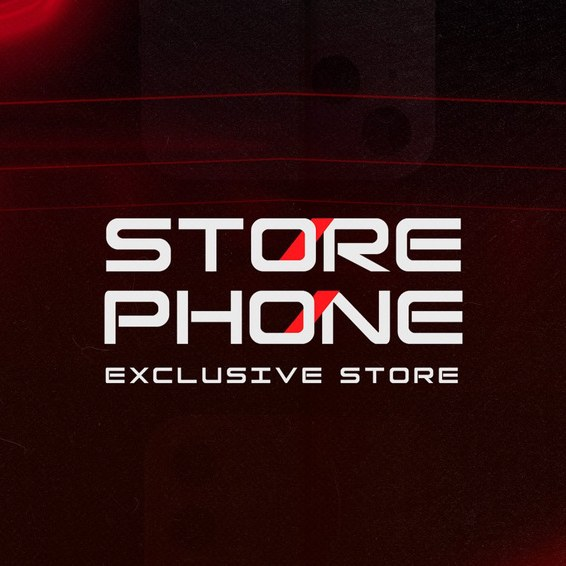
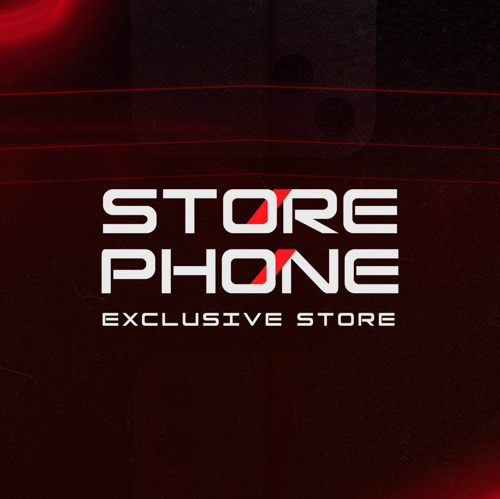

Estratégia
Planejo conteúdos por etapa do funil para levar o perfil a novos públicos e transformar visualizações em seguidores.
by Cyndy
Social media
Estrategista digital
& Edição de vídeos
@cyndy.pimenttel
by CyndySocial
media
Estrategista digital
& Edição de vídeos

Kit básico de criação:
“Toda marca tem uma história. O meu trabalho é fazer com que ela seja vista.” — Cyndy Pimentel
Estudante de Publicidade e Propaganda e estrategista de mídias sociais, com 1 ano de experiência criando conteúdo para empresas.
Apaixonada por contar histórias e transformar marcas em conteúdos que geram resultado.
Planejo conteúdos por etapa do funil para levar o perfil a novos públicos e transformar visualizações em seguidores.
Edito reels e vídeos curtos com ritmo, legendas e ganchos que prendem a atenção já nos primeiros segundos.
Conto a história da marca de um jeito humano e próximo, para que o público se identifique e volte sempre.
Conteúdo com estratégia: cada vídeo é
pensado para gerar resultado.

Os reels são ideais para quem quer alcançar novos públicos contando uma boa história.
by Cyndy
Números que mostram que estratégia e criatividade andam juntas.
by Cyndy
@storephonebelem
Foi aplicada uma estratégia de conteúdo de topo de funil para descoberta do perfil. Os conteúdos passaram a ser entregues para novos públicos, trazendo novos seguidores — resultado alcançado em 6 meses de trabalho.

storephonebelem•••
18K → 25K seguidoresem 6 meses
Objetivo: engajamento orgânico
de views no TikTok com um vídeo de apenas 17 segundos.
80% do tráfego via “For You” · tempo médio de 17 s assistidos · público Brasil/EUA, 18–24 anos
Marcas que confiaram no meu trabalho para contar suas histórias nas redes.
by Cyndy
Será um prazer trabalhar para o seu negócio. Entre em contato e vamos conversar sobre o seu projeto.
Contatos